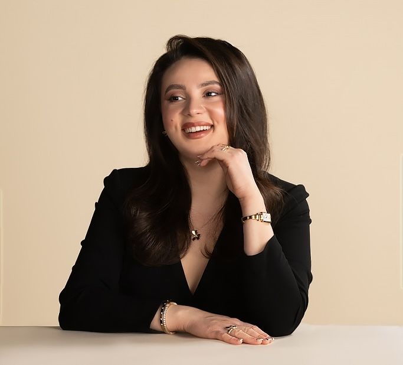

Maysa Ilamanova
MIT Chemistry PhD Candidate
Chemist. Data Scientist. Builder.
Bridging molecular biology, machine learning, and analytical chemistry to understand how chemical damage to DNA shapes human biology.
MIT Chemistry PhD candidate with 6+ years of interdisciplinary research experience spanning experimental science and computation. Curious by nature and interested in turning scientific questions into discoveries and tools for human health and wellness.
- Synthesized peptide–PMO conjugates via fast-flow solid-phase peptide synthesis of peptides and nucleic acids for antisense oligonucleotide delivery
- Purified and characterized peptide–PMO constructs by chromatography and evaluated cellular uptake and exon-skipping activity in HeLa EGFP-654 cells.
- Collaborated with Sarepta Therapeutics on Spinal Muscular Atrophy targeting; scaled peptide-PMO construct production for in vivo studies.
- Pioneered a cross-institutional collaboration and completed multistep de novo asymmetric synthesis of 7-oxa- and 7-aza-phomopsolide E analogues and stereoisomers.
- Conducted stereochemical structure–activity relationship studies and characterized products using NMR, MS, IR, polarimetry, and TLC.
- Evaluated anticancer activity across NCI cancer cell lines via MTT assay.
- Optimized environmentally benign alkylation of nitrogen-containing heterocycles using CO₂ from carbonated water; evaluated substrate scope, activity and yield.
- Co-authored 2 peer-reviewed publications; presented work at seminars and symposia.
Co-Director, Industry Initiative Jan 2023 – Present
Co-lead an MIT mentorship initiative connecting students and postdocs with industry leaders through workshops and executive panels.
Organized biotech seminar series, featuring academic and industry leaders, and coordinate industry site visits for MIT community.
Emerson Consequential Scholar Jan 2026 – July 2026
Entrepreneurship program for PhD researchers focused on translating technical research into real-world impact through commercialization, venture strategy, and a network of scientists, founders, and investors.
Teaching Assistant & Peer Mentor Sep 2022 – May 2025
Mentored undergraduate and graduate students in experimental design, data interpretation, and scientific communication.
Supplemental Instruction Leader & Subject Tutor Sep 2022 – May 2024
Led one-on-one and group tutoring sessions in organic chemistry, general chemistry, biology & biochemistry; partnered with faculty on lectures and assessments.

PhD Candidate in Chemistry
BS, Biochemistry
Base Excision Repair & DNA Adductomics
- Leading studies investigating how base excision repair shapes DNA-adduct landscapes across human cell types and DNA-repair gene knockout lines.
- Built nomad, an automated Python/Bash pipeline that parses, normalizes, quality-filters, and annotates untargeted LC–MS DNA-adductomics data using adaptive isotopomer detection, salt and artifact removal, and database matching; reducing end-to-end analysis time from 8–12 hours to ~10 minutes per sample (>97%), including post-analysis QC.
- Implementing ML methods for retention-time alignment and shift correction in LC–MS across instruments, users, and acquisition conditions.
- Applied ML and statistical analysis methods to reveal patterns in DNA repair capacity across different human cell lines, including DNA repair-deficient cells; generated reproducible QC reports and visualizations and benchmarked automated peak detection against manual analysis.
- Leading a collaboration with the Engelward Lab at MIT to quantitatively profile N-nitroso-induced DNA lesions in wild-type and Aag-deficient MEF cells using a targeted LC–MS workflow.